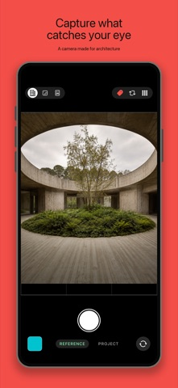
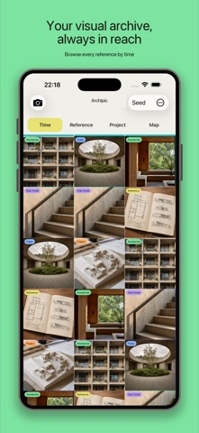
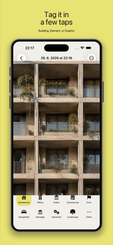
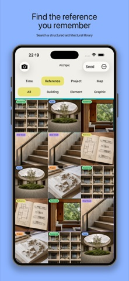
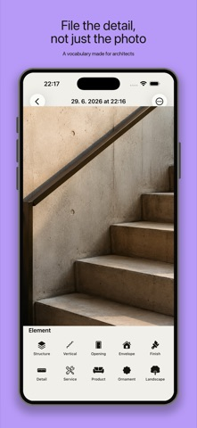

Press
Facts, images and contact for writing about Archipic.
About Archipic
Archipic is a photo journal for architects and architecture students, free on iPhone and iPad. It keeps the architecture people notice day to day, such as a façade on a walk, a joint at an exhibition or a plan in a book, in an archive they can still search years later. Each photo is tagged in about two taps from a small, fixed vocabulary: Building, Element or Graphic, followed by fields such as typology, material or kind. The archive can be browsed by date, by what is in the photo, by project or on a map, and any selection can be laid out as a print-ready poster or journal, or as an image to post.
The app is private by design. Photos stay on the device and sync only through the user’s own iCloud. There are no accounts, no ads, no analytics and no third-party code, and the App Store privacy label reads Data Not Collected. Archipic was first released in June 2026. It is made by Sami Abdulnour, a Czech architect.
Fact sheet
- Name
- Archipic (formerly Archi.vé)
- Maker
- Sami Abdulnour, a Czech architect
- Price
- Free, with no in-app purchases and no ads
- Devices
- iPhone and iPad, iOS and iPadOS 17 or later. Also runs on Apple silicon Macs and Apple Vision Pro as an iPad app.
- Size
- About 3 MB
- Language
- English
- First release
- 11 June 2026
- Current version
- 1.4, released 28 September 2026
- Privacy
- App Store label: Data Not Collected. No accounts, ads, analytics or third-party SDKs. Sync runs through the user’s own iCloud only.
- App Store
- apps.apple.com/app/id6777989742
- Website
- archipic.app
- Contact
- sami.abdulnour@gmail.com
Images
You are welcome to use these in coverage of Archipic. Click an image for the full-size file, or download them all at once.
Download the press kit (zip, 4 MB)
App icon

iPhone


Camera · 1320 × 2868

Archive · 1320 × 2868

Tagging · 1320 × 2868

Finding · 1320 × 2868

Elements · 1320 × 2868iPad

Contact
For interviews, questions or anything not on this page, email sami.abdulnour@gmail.com.
← Back to Archipic